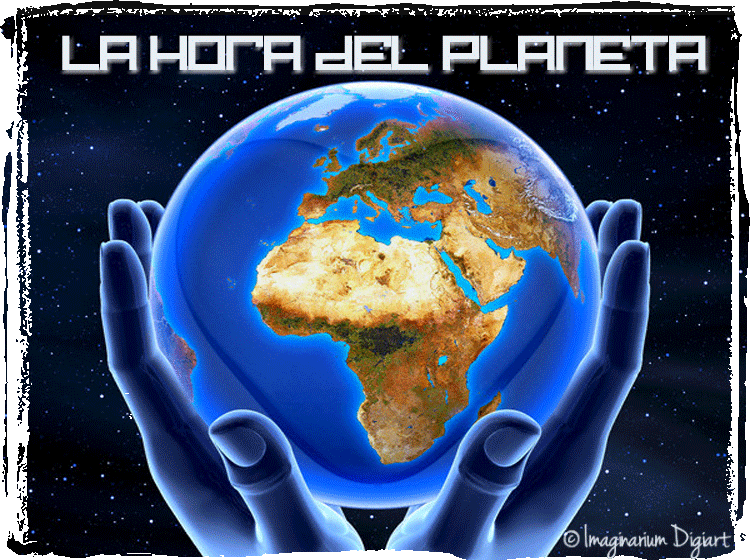
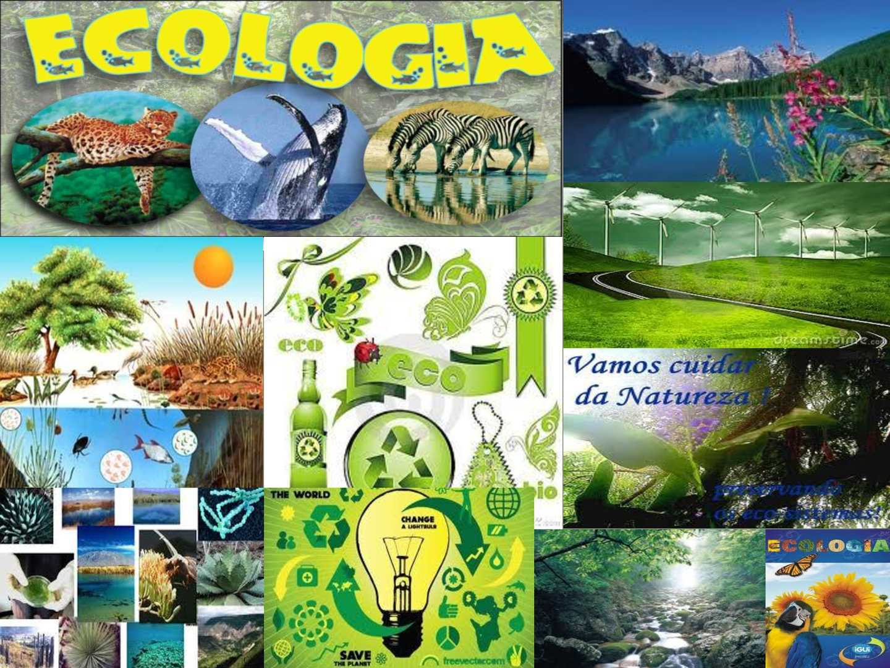

Mostrar texto
Esconder texto

La Tierra es el tercer planeta si contamos desde el Sol y es el más grande de los cuatro planetas terrestres, es decir, Mercurio, Venus, la Tierra y Marte. Estos planetas también son los más cercanos al sol. La Tierra también es el único lugar en el sistema solar donde el agua puede estar presente en los tres estados: sólido, líquido y gaseoso.
Seguir leyendo

Los científicos han calculado recientemente que hay más de 1500 minerales que aún no se han descubierto en la Tierra. Somos conscientes de más de 5000 minerales, pero muchos aún son desconocidos. Otro dato curioso a destacar es que la diversidad mineral de la Tierra es única en sí misma y no está duplicada en ningún otro planeta, ni siquiera en los exoplanetas rocosos.
Ocultar contenidos
CURIOSIDADES